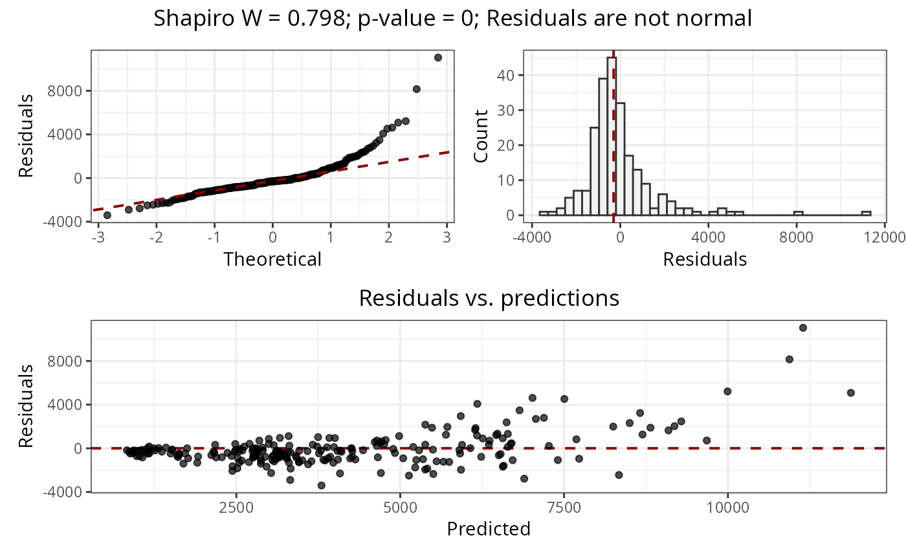

Applies a Shapiro-Wilks test to a numeric vector, and plots the qq plot and the histogram.
Value
A list with four slots:
/item
wW statistic returned byshapiro.test(). /itemp.valuep-value of the Shapiro test. /iteminterpretationCharacter vector, one of "x is normal", "x is not normal". /itemplotA patchwork plot with the qq plot and the histogram of x.
Details
The function shapiro.test() has a hard limit of 5000 cases. If the model residuals have more than 5000 cases, then sample(x = residuals, size = 5000) is applied to the model residuals before the test.
See also
ggplot,aes,geom_qq_line,ggtheme,labs,geom_freqpoly,geom_abline
plot_annotation
Other spatial_analysis:
filter_spatial_predictors(),
mem(),
mem_multithreshold(),
moran(),
moran_multithreshold(),
pca(),
pca_multithreshold(),
rank_spatial_predictors(),
residuals_test(),
select_spatial_predictors_recursive(),
select_spatial_predictors_sequential()
Examples
data(plants_rf)
y <- residuals_diagnostics(
residuals = get_residuals(plants_rf),
predictions = get_predictions(plants_rf)
)
y
#> $shapiro.w
#> [1] 0.7976006
#>
#> $p.value
#> [1] 1.87131e-16
#>
#> $interpretation
#> [1] "Residuals are not normal"
#>
#> $plot

#>